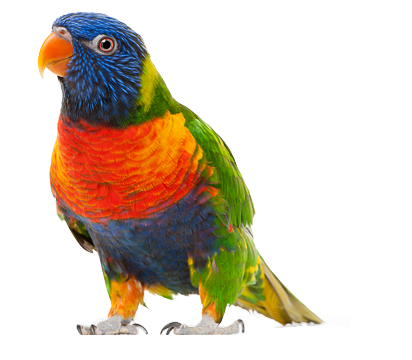

Linnud on lahedad!
"No bird soars too
high if he soars with
own wings."
- William Blake

MINU LEMMIK LINNUD
VÄIKE LIND
PIKK NOKK
LENDAB KÕRGEL
ALATI LÕBUS
Lindude eellased eraldusid Keskaegkonna esimesel poolel diapsiidide hulka kuulunud roomajatest. Millisest diapsiidide rühmast ja millal linnud täpsemalt alguse said, pole selge, kuigi uusi fossiile pidevalt leitakse. Pikka aega valitsev seisukoht on olnud lindude pärinemine Dromeasauridae hulka kuulunud dinosaurustest. Viimasel ajal on toetust kogunud ka alternatiivne hüpotees lindude ja dinosauruste pärinemisest ühtsest eellasest (varastest diapsiididest). Viimase kasuks räägivad eriti lindude ja sisalvaagnaliste esijäsemete (ja oletatavasti hingamiselundite) ehituse erinevused ning teooria, et suled olid diapsiidide primaarseks katteks ja soomused nende
derivaadid. Esimeseks selgelt kaasaegsete lindude tunnustega (ning ka paljude roomajalike tunnustega, nagu hambad ja sõrmedega esijäsemed) fossiiliks on arheopterüks ajast umbes 160 miljonit aastat tagasi (on ka teada palju talle lähedasi vorme, näiteks Rahona, Confuciornis). Arheopterüksist vanemaid lindude fossiile pole teada (Triiasest pärineva väga halvasti säilinud nn Texase linnu rekonstruktsiooni peetakse enamasti ebakorrektseks), küll aga pärineb hilisemast ajast mitu huvitavat leidu, kes meenutavad arheopterüksi ja dinosauruste vahevorme (tegemist võib niisiis olla reliktidega, nt Unenlagia,
Sinosauropteryx). Juba väga lähedane kaasaegsetele lindudele oli vaid veidi hilisem (~140 miljonit aastat tagasi) Liaoningornis. Nende leidude põhjal on varased linnud jagatud kaheks rühmaks, Ornithurae (Liaoningornis, läänelinnulised, kalalinnulised ja kaasaegsed linnud Neornithes) ja Sauriae (arheopterüks, Confuciornis, Enanornithes, Patagopteryx).
KÜSI MINULT LINDUDE KOHTA
